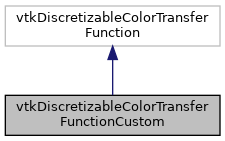

|
ACloudViewer
3.9.4
A Modern Library for 3D Data Processing
|
|
ACloudViewer
3.9.4
A Modern Library for 3D Data Processing
|
#include <vtkDiscretizableColorTransferFunctionCustom.h>


Public Member Functions | |
| vtkTypeMacro (vtkDiscretizableColorTransferFunctionCustom, vtkDiscretizableColorTransferFunction) | |
| void | PrintSelf (ostream &os, vtkIndent indent) override |
| virtual void | SetAnnotationsInFullSet (vtkAbstractArray *values, vtkStringArray *annotations) |
| vtkGetObjectMacro (AnnotatedValuesInFullSet, vtkAbstractArray) | |
| vtkGetObjectMacro (AnnotationsInFullSet, vtkStringArray) | |
| virtual vtkIdType | SetAnnotationInFullSet (vtkVariant value, std::string annotation) |
| virtual vtkIdType | SetAnnotationInFullSet (std::string value, std::string annotation) |
| virtual void | ResetAnnotationsInFullSet () |
| void | SetIndexedColorRGB (unsigned int index, const double rgb[3]) |
| void | SetIndexedColorRGBA (unsigned int index, const double rgba[4]) |
| void | ResetActiveAnnotatedValues () |
| void | SetActiveAnnotatedValue (std::string value) |
| void | SetNumberOfIndexedColorsInFullSet (int n) |
| int | GetNumberOfIndexedColorsInFullSet () |
| void | SetIndexedColorInFullSet (unsigned int index, double r, double g, double b) |
| void | GetIndexedColorInFullSet (unsigned int index, double rgb[3]) |
| void | SetNumberOfIndexedOpacitiesInFullSet (int n) |
| int | GetNumberOfIndexedOpacitiesInFullSet () |
| void | SetIndexedOpacityInFullSet (unsigned int index, double alpha) |
| void | GetIndexedOpacityInFullSet (unsigned int index, double *alpha) |
| vtkSetMacro (UseActiveValues, bool) | |
| vtkGetMacro (UseActiveValues, bool) | |
| vtkBooleanMacro (UseActiveValues, bool) | |
| void | Build () override |
Static Public Member Functions | |
| static vtkDiscretizableColorTransferFunctionCustom * | New () |
Protected Member Functions | |
| vtkDiscretizableColorTransferFunctionCustom () | |
| ~vtkDiscretizableColorTransferFunctionCustom () override | |
Definition at line 17 of file vtkDiscretizableColorTransferFunctionCustom.h.
|
protected |
Definition at line 20 of file vtkDiscretizableColorTransferFunctionCustom.cpp.
References NULL.
|
overrideprotected |
Definition at line 35 of file vtkDiscretizableColorTransferFunctionCustom.cpp.
|
override |
Override to set only the active annotations
Definition at line 289 of file vtkDiscretizableColorTransferFunctionCustom.cpp.
References color, GetIndexedColorInFullSet(), GetIndexedOpacityInFullSet(), and SetIndexedColorRGBA().
| void vtkDiscretizableColorTransferFunctionCustom::GetIndexedColorInFullSet | ( | unsigned int | index, |
| double | rgb[3] | ||
| ) |
Definition at line 225 of file vtkDiscretizableColorTransferFunctionCustom.cpp.
References rgb.
Referenced by Build().
| void vtkDiscretizableColorTransferFunctionCustom::GetIndexedOpacityInFullSet | ( | unsigned int | index, |
| double * | alpha | ||
| ) |
Definition at line 276 of file vtkDiscretizableColorTransferFunctionCustom.cpp.
Referenced by Build().
| int vtkDiscretizableColorTransferFunctionCustom::GetNumberOfIndexedColorsInFullSet | ( | ) |
Definition at line 219 of file vtkDiscretizableColorTransferFunctionCustom.cpp.
| int vtkDiscretizableColorTransferFunctionCustom::GetNumberOfIndexedOpacitiesInFullSet | ( | ) |
Definition at line 269 of file vtkDiscretizableColorTransferFunctionCustom.cpp.
|
static |
|
override |
Definition at line 346 of file vtkDiscretizableColorTransferFunctionCustom.cpp.
| void vtkDiscretizableColorTransferFunctionCustom::ResetActiveAnnotatedValues | ( | ) |
Definition at line 168 of file vtkDiscretizableColorTransferFunctionCustom.cpp.
|
virtual |
Definition at line 154 of file vtkDiscretizableColorTransferFunctionCustom.cpp.
References SetAnnotationsInFullSet().
| void vtkDiscretizableColorTransferFunctionCustom::SetActiveAnnotatedValue | ( | std::string | value | ) |
Definition at line 176 of file vtkDiscretizableColorTransferFunctionCustom.cpp.
|
virtual |
Definition at line 137 of file vtkDiscretizableColorTransferFunctionCustom.cpp.
References SetAnnotationInFullSet(), and x.
|
virtual |
Definition at line 109 of file vtkDiscretizableColorTransferFunctionCustom.cpp.
Referenced by SetAnnotationInFullSet().
|
virtual |
Parallel API to API for annotated values to set/get the full list of annotations. A subset of the full list will be used.
Definition at line 59 of file vtkDiscretizableColorTransferFunctionCustom.cpp.
Referenced by ResetAnnotationsInFullSet().
| void vtkDiscretizableColorTransferFunctionCustom::SetIndexedColorInFullSet | ( | unsigned int | index, |
| double | r, | ||
| double | g, | ||
| double | b | ||
| ) |
Definition at line 199 of file vtkDiscretizableColorTransferFunctionCustom.cpp.
References rgb, and SetNumberOfIndexedColorsInFullSet().
|
inline |
Add colors to use when IndexedLookup is true. SetIndexedColor() will automatically call SetNumberOfIndexedColors(index+1) if the current number of indexed colors is not sufficient for the specified index and all will be initialized to the RGBA/RGB values passed to this call.
Definition at line 48 of file vtkDiscretizableColorTransferFunctionCustom.h.
References rgb.
|
inline |
Definition at line 51 of file vtkDiscretizableColorTransferFunctionCustom.h.
Referenced by Build().
| void vtkDiscretizableColorTransferFunctionCustom::SetIndexedOpacityInFullSet | ( | unsigned int | index, |
| double | alpha | ||
| ) |
Definition at line 251 of file vtkDiscretizableColorTransferFunctionCustom.cpp.
References SetNumberOfIndexedOpacitiesInFullSet().
| void vtkDiscretizableColorTransferFunctionCustom::SetNumberOfIndexedColorsInFullSet | ( | int | n | ) |
Definition at line 183 of file vtkDiscretizableColorTransferFunctionCustom.cpp.
Referenced by SetIndexedColorInFullSet().
| void vtkDiscretizableColorTransferFunctionCustom::SetNumberOfIndexedOpacitiesInFullSet | ( | int | n | ) |
Definition at line 237 of file vtkDiscretizableColorTransferFunctionCustom.cpp.
Referenced by SetIndexedOpacityInFullSet().
| vtkDiscretizableColorTransferFunctionCustom::vtkBooleanMacro | ( | UseActiveValues | , |
| bool | |||
| ) |
| vtkDiscretizableColorTransferFunctionCustom::vtkGetMacro | ( | UseActiveValues | , |
| bool | |||
| ) |
| vtkDiscretizableColorTransferFunctionCustom::vtkGetObjectMacro | ( | AnnotatedValuesInFullSet | , |
| vtkAbstractArray | |||
| ) |
| vtkDiscretizableColorTransferFunctionCustom::vtkGetObjectMacro | ( | AnnotationsInFullSet | , |
| vtkStringArray | |||
| ) |
| vtkDiscretizableColorTransferFunctionCustom::vtkSetMacro | ( | UseActiveValues | , |
| bool | |||
| ) |
Set whether to use restrict annotations to only the values designated as active. Off by default.
| vtkDiscretizableColorTransferFunctionCustom::vtkTypeMacro | ( | vtkDiscretizableColorTransferFunctionCustom | , |
| vtkDiscretizableColorTransferFunction | |||
| ) |